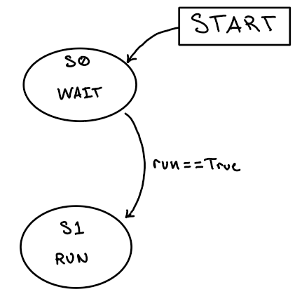

MOTOR¶
{kind=link}
- class task_motor.Task_Motor(Omega: task_share.Share, enc_reset: task_share.Share, theta: task_share.Share, motor: Motor, enc: Encoder, PID: ClosedLoop, batt: Voltage)¶
The Task_Motor task manages motor control using a closed-loop PID controller. It continuously updates encoder readings, shares wheel position, and calculates actuation voltage based on the motor’s velocity setpoint. The actuation voltage is converted into a PWM effort percentage, considering the current battery voltage.
- Parameters:
Omega – A share of the desired motor velocity in rad/s.
enc_reset – A share that signals when to reset the encoder.
motor – A Motor object to be controlled
enc – A Encoder object, providing position and velocity feedback.
PID – A ClosedLoop controller object that computes the necessary PWM to achieve the desired motor velocity.
batt – A Voltage object that reads the current battery voltage.
- Return theta:
A share of the calculated wheel position in radians.
- task()¶
Generator Function to run implemented Finite-State Machine